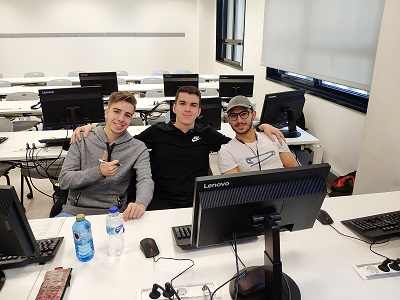

MSS fue creada en 2019 inicialmente como un proyecto para ver el nivel de programación web de sus fundadores, hasta que trabajando y trabajando llegó hasta el nivel en el que está hoy. Actualmente contamos con 3 trabajadores al rededor del mundo, experiencia en Programación, desarrollo web, consultas web, mantenimiento de servidores y diseño de programas.
